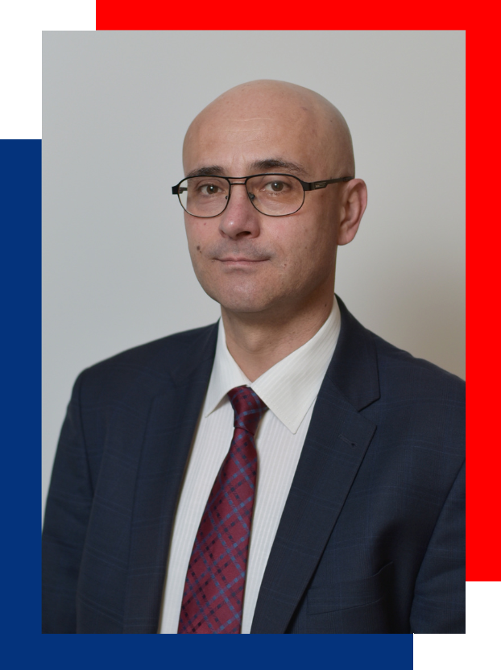
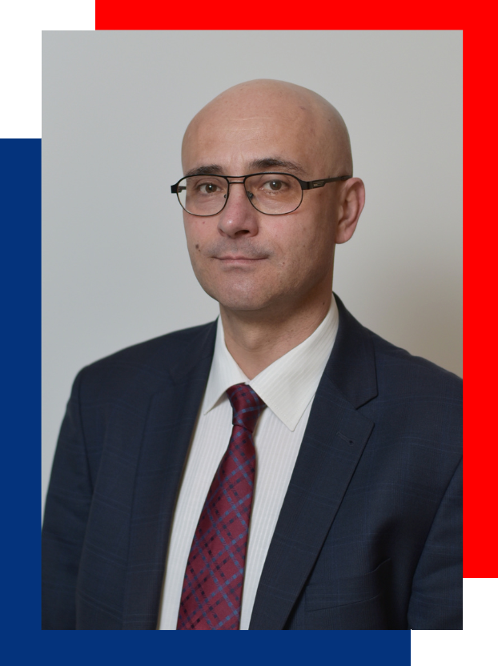

O mnie:
O mnie:
Germanista, absolwent filologii germańskiej na WSP w Rzeszowie. Od 2011 roku dyrektor Liceum Ogólnokształcącego im. Mikołaja Kopernika w Tarnobrzegu.
Stypendysta CODN w Warszawie oraz Fundacji im. Roberta Boscha - jeden z nielicznych Polaków biorących udział w europejskim seminarium w Bonn i Brukseli: „98. Europa – Lehrerseminar”.
Wyróżniony stypendium Fundacji Rozwoju Systemu Edukacji uczestniczył w stypendium naukowym „Stressfrei in den Unterricht! Mit Neuro Linguistischem Lernen und Coaching”w Austrii.
Honorowy członek prezydium organizacji „Europafels” w Niemczech, która tworzy międzynarodową sieć szkół i placówek oświatowych oraz działa na rzecz rozwoju edukacji w Europie.
W 2019 roku był jedynym prelegentem z Polski w spotkaniu upamiętniającym śmierć pani Magdaleny Baur odznaczonej tytułem „Kobieta Europy” przez Komisję UE w Brukseli. W obecności wice-komisarz Unii Europejskiej, ministra edukacji Landu Federalnego Bawarii i wielu gości wygłosił wykład dotyczący szkoły przyszłości i wizji rozwoju edukacji.
Inicjator międzynarodowego projektu, którego zwieńczeniem było powstanie w Tarnobrzegu tablicy upamiętniającej osobę Mariana Ruzamskiego.
Realizator licznych projektów, których celem było pozyskiwanie środków zewnętrznych.
W roku 2016 wyróżniony przez społeczność i pracowników Środowiskowego Domu Samopomocy w Tarnobrzegu statuetką „Ludzi Wielkiego Serca”.
Od lat współpracuje z prezeską Fundacji „Domy Wspólnoty Chleb Życia”, siostrą zakonną Małgorzatą Chmielewską. W roku 2022 pozyskał na bieżące funkcjonowanie fundacji 21 840,99 Euro.
Prywatnie szczęśliwy mąż Magdaleny i ojciec dwóch wspaniałych synów, z którymi dzieli swoje pasje: podróżowanie i sport.
O mnie:
Germanista, absolwent filologii germańskiej na WSP w Rzeszowie. Od 2011 roku dyrektor Liceum Ogólnokształcącego im. Mikołaja Kopernika w Tarnobrzegu.
Stypendysta CODN w Warszawie oraz Fundacji im. Roberta Boscha - jeden z nielicznych Polaków biorących udział w europejskim seminarium w Bonn i Brukseli: „98. Europa – Lehrerseminar”.
Wyróżniony stypendium Fundacji Rozwoju Systemu Edukacji uczestniczył w stypendium naukowym „Stressfrei in den Unterricht! Mit Neuro Linguistischem Lernen und Coaching”w Austrii.
Honorowy członek prezydium organizacji „Europafels” w Niemczech, która tworzy międzynarodową sieć szkół i placówek oświatowych oraz działa na rzecz rozwoju edukacji w Europie.
W 2019 roku był jedynym prelegentem z Polski w spotkaniu upamiętniającym śmierć pani Magdaleny Baur odznaczonej tytułem „Kobieta Europy” przez Komisję UE w Brukseli. W obecności wice-komisarz Unii Europejskiej, ministra edukacji Landu Federalnego Bawarii i wielu gości wygłosił wykład dotyczący szkoły przyszłości i wizji rozwoju edukacji.
Inicjator międzynarodowego projektu, którego zwieńczeniem było powstanie w Tarnobrzegu tablicy upamiętniającej osobę Mariana Ruzamskiego.
Realizator licznych projektów, których celem było pozyskiwanie środków zewnętrznych.
W roku 2016 wyróżniony przez społeczność i pracowników Środowiskowego Domu Samopomocy w Tarnobrzegu statuetką „Ludzi Wielkiego Serca”.
Od lat współpracuje z prezeską Fundacji „Domy Wspólnoty Chleb Życia”, siostrą zakonną Małgorzatą Chmielewską. W roku 2022 pozyskał na bieżące funkcjonowanie fundacji 21 840,99 Euro.
Prywatnie szczęśliwy mąż Magdaleny i ojciec dwóch wspaniałych synów, z którymi dzieli swoje pasje: podróżowanie i sport.

Cały program wyborczy
Twoje uwagi
Szanowni mieszkańcy, zdanie każdego Tarnobrzeżanina jest dla mnie tak samo ważne, jeżeli posiadacie własne pomysły, widzicie potrzebę modyfikacji, któregoś z punktów, bądź pragnęlibyście dopytać o informacje z programu wyborczego zapraszam Was serdecznie do kontaktu za pośrednictwem poniższego maila:strozt3112@gmial.com
Kandydaci do rady miasta
Aktualności
Dział dla młodzieży
Zawsze byłem blisko z młodzieżą, młodymi ludźmi, którzy nie tylko byli moimi uczniami, lecz przede wszystkim inspiracją i ogromną nadzieją. Dlatego stworzony dla Was został specjalny dedykowany Wam dział, gdzie poprzez formularz poniżej możecie przedstawić swój własny pomysł na to czego Wam brakuje, lub co pragnęlibyście zmienić w Naszym mieście. Wasz głos oraz inicjatywa jest dla mnie ważna, więc dajcie się słyszeć. Połączmy się i zmieńmy razem Tarnobrzeg w lepsze miejsce!
Zawsze byłem blisko z młodzieżą, młodymi ludźmi, którzy nie tylko byli moimi uczniami, lecz przede wszystkim inspiracją i ogromną nadzieją. Dlatego stworzony dla Was został specjalny dedykowany Wam dział, gdzie poprzez formularz poniżej możecie przedstawić swój własny pomysł na to czego Wam brakuje, lub co pragnęlibyście zmienić w Naszym mieście. Wasz głos oraz inicjatywa jest dla mnie ważna, więc dajcie się słyszeć. Połączmy się i zmieńmy razem Tarnobrzeg w lepsze miejsce!
Przyłącz się
Szanowni Tarnobrzeżanie, Wasze wsparcie jest niezwykle cenne i pomaga dotrzeć do większej liczby osób, dlatego zachęcam Was do udostępniania moich treści na Waszych mediach społecznościowych, używania hasztagów:
#ŁączyNasTarnobrzeg
#TomaszStróżNaPrezydenta
#CzasZacząćDziałać
oraz aktywności na moich mediach społecznościowych.
Szanowni Tarnobrzeżanie, Wasze wsparcie jest niezwykle cenne i pomaga dotrzeć do większej liczby osób, dlatego zachęcam Was do udostępniania moich treści na Waszych mediach społecznościowych, używania hasztagów:
#ŁączyNasTarnobrzeg
#TomaszStróżNaPrezydenta
#CzasZacząćDziałać
oraz aktywności na moich mediach społecznościowych.
Komitet
Jeśli są Państwo zainteresowani zaangażowaniem jako wolontariusze, serdecznie zapraszamy do naszego zespołu. Zachęcamy do kontaktu poprzez e-mail tsroz4837@gmail.com w celu uzyskania więcej informacji i dołączenia do naszej inicjatywy.
Jeśli są Państwo zainteresowani zaangażowaniem jako wolontariusze, serdecznie zapraszamy do naszego zespołu. Zachęcamy do kontaktu poprzez e-mail tsroz4837@gmail.com w celu uzyskania więcej informacji i dołączenia do naszej inicjatywy.
Wsparcie finansowe dla kampanii:
Zachęcamy do wsparcia finansowego naszej kampanii. Wasza hojność przyczyni się do zwiększenia zasięgu naszych działań i rozwoju społeczności. Poniżej znajdują się szczegóły konta bankowego dla wpłat.
Nr konta:
Zachęcamy do wsparcia finansowego naszej kampanii. Wasza hojność przyczyni się do zwiększenia zasięgu naszych działań i rozwoju społeczności. Poniżej znajdują się szczegóły konta bankowego dla wpłat.
Nr konta:
Dane kontaktowe:
tstroz874392@gmial.com
facebook.com/tomasz.stroz
instagram.com/tomasz.stroz
tiktok.com/@tomasz_stroz
12345678987654
tstroz874392@gmial.com
facebook.com/tomasz.stroz
instagram.com/tomasz.stroz
tiktok.com/@tomasz_stroz
12345678987654
KWW TOMASZA STRÓŻA
ŁĄCZY NAS TARNOBRZEG
ŁĄCZY NAS TARNOBRZEG